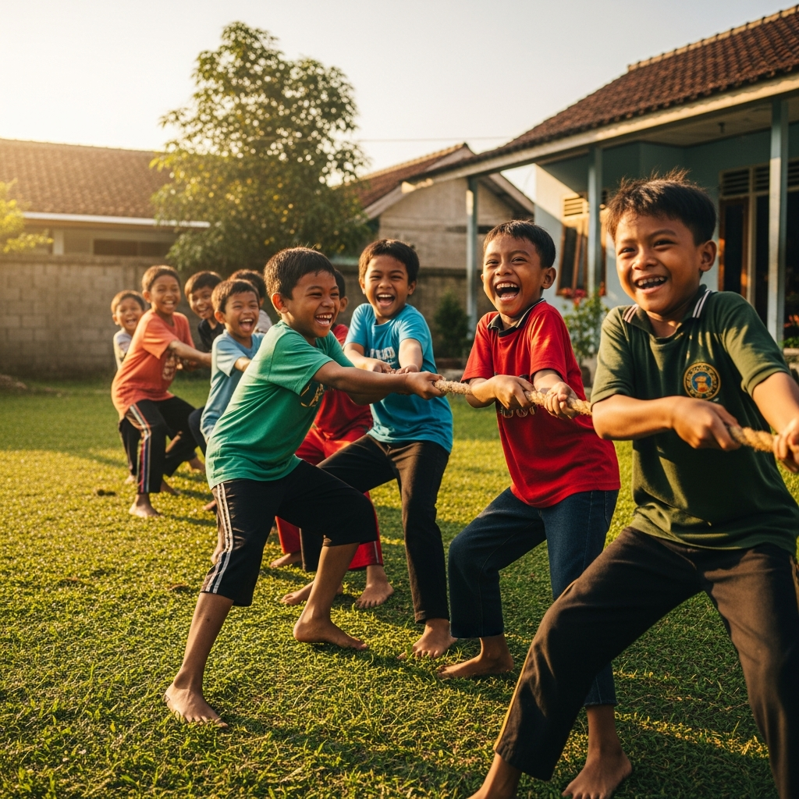
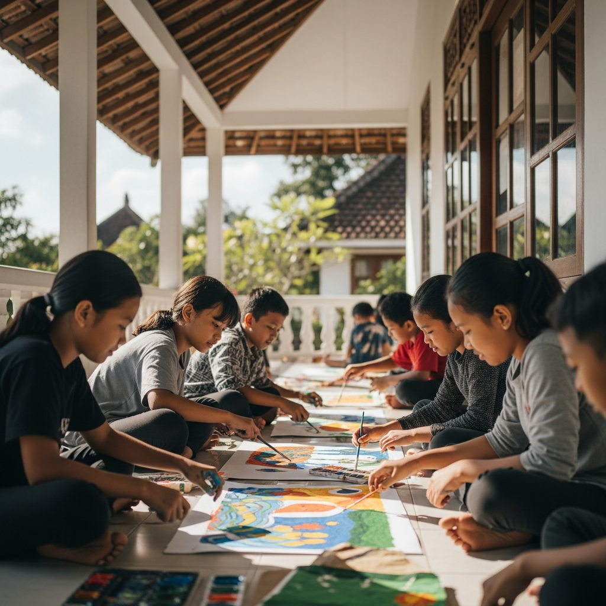
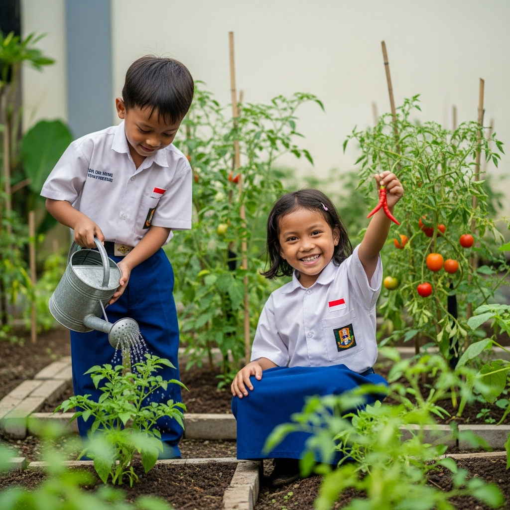
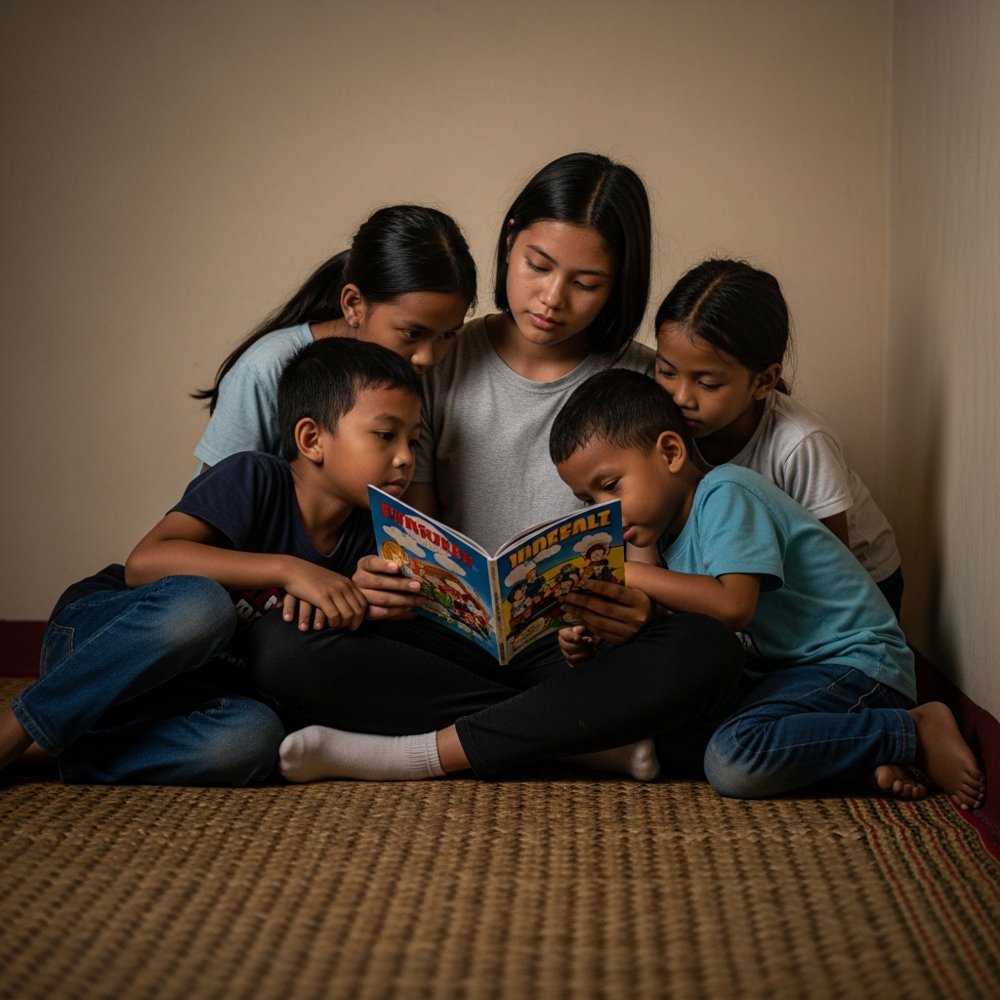
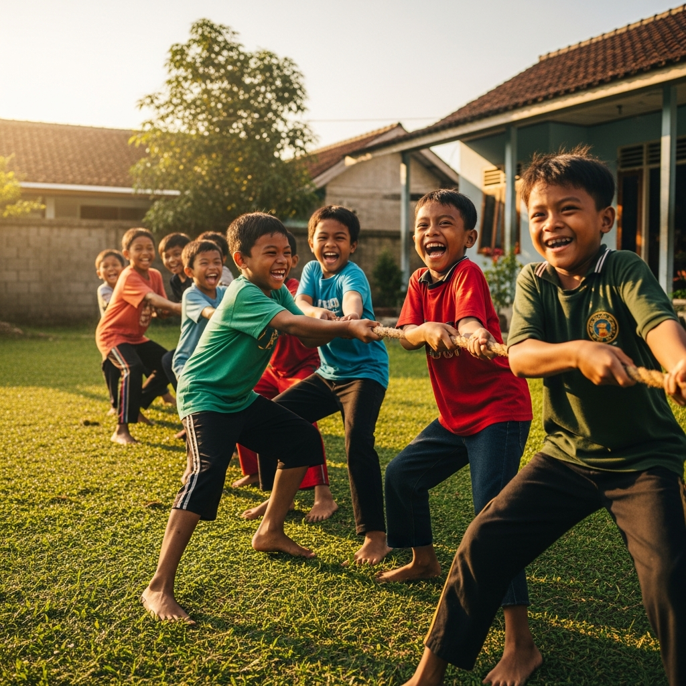
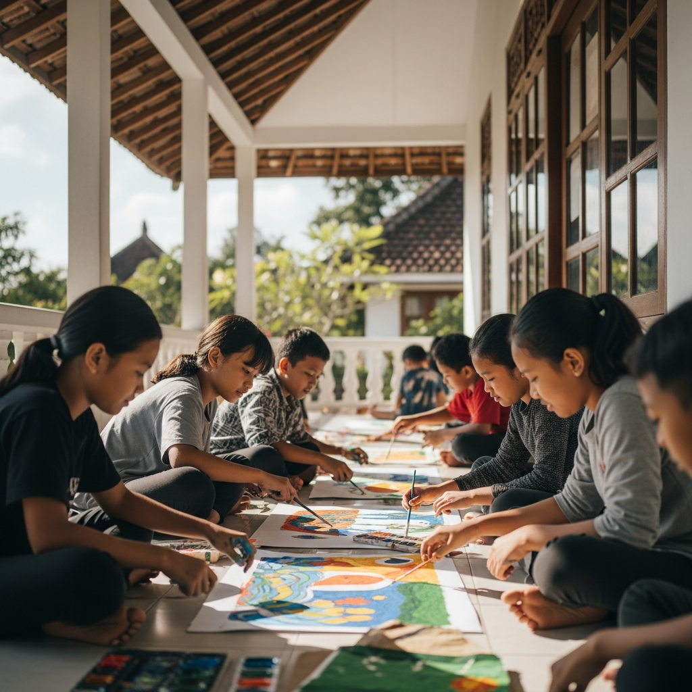
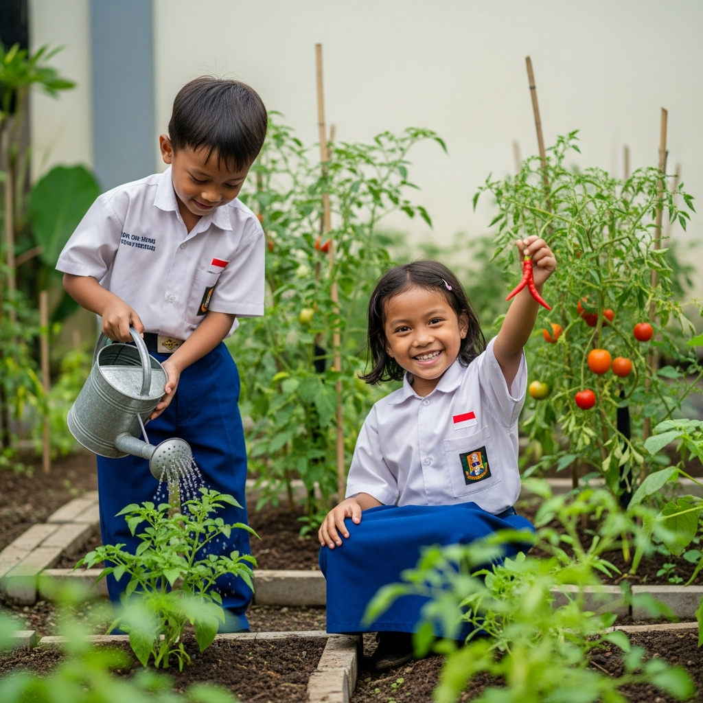
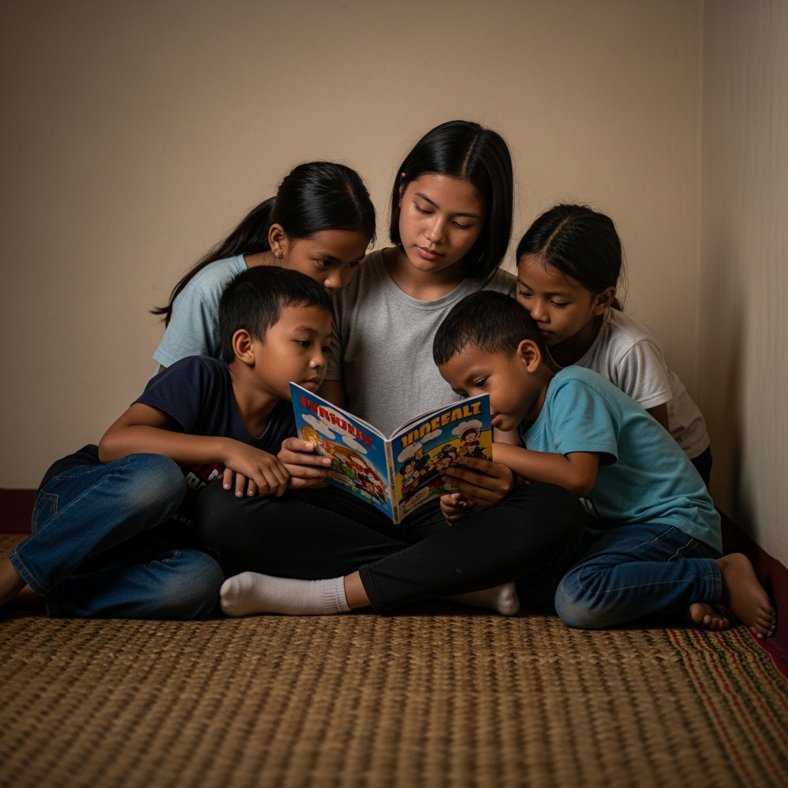

Menyalakan Asa,
Membangun Masa Depan
Memberikan rumah yang aman, pendidikan yang layak, dan kasih sayang tanpa batas untuk setiap anak titipan Tuhan.
Beri Dukungan AndaCerita Kami
Panti Asuhan Lentera Harapan berdiri sejak tahun 2010 sebagai rumah yang penuh kehangatan bagi anak-anak yang membutuhkan. Visi kami adalah memastikan setiap anak mendapatkan haknya untuk tumbuh kembang secara optimal dalam lingkungan yang positif dan mendukung.
Kami percaya, dengan pendidikan yang baik, gizi seimbang, dan bimbingan moral, mereka dapat meraih cita-cita dan menjadi generasi penerus bangsa yang tangguh dan berakhlak mulia.
Program Unggulan Kami
Fokus kami untuk menciptakan masa depan yang lebih cerah.

Pendidikan Layak
Menyediakan akses pendidikan formal, bimbingan belajar, dan kelas keterampilan.
Kesehatan & Gizi
Memastikan asupan gizi seimbang dan pemeriksaan kesehatan rutin untuk semua anak.
Bina Karakter
Mengadakan kegiatan keagamaan dan rekreasi untuk membentuk pribadi yang ceria dan berakhlak.
Uluran Tangan Anda, Harapan Mereka
Setiap donasi sangat berarti untuk pendidikan, kesehatan, dan kebahagiaan anak-anak kami. Mari bersama menjadi bagian dari perubahan hidup mereka.
3 Langkah Mudah Berdonasi
Prosesnya cepat, mudah, dan aman.
Pilih Rekening & Lakukan Transfer
Silakan transfer donasi Anda ke salah satu rekening resmi Yayasan Lentera Harapan di bawah ini:
BANK MANDIRI
123 456 789 0123
BANK BCA
987 654 321 0987
a/n YAYASAN LENTERA HARAPAN
Konfirmasi Donasi Anda
Setelah transfer berhasil, mohon kirimkan bukti transfer agar donasi Anda dapat kami catat dan kami kirimkan laporan pertanggungjawaban.
Kirim Bukti ke WhatsApp
Klik tombol di bawah ini untuk langsung mengirimkan konfirmasi Anda kepada kami.
KonfirmasiMomen Keceriaan Kami
Intip kehangatan dan kebersamaan di rumah kami.
 







Kunjungi & Hubungi Kami
Kami sangat senang menerima kunjungan atau pertanyaan dari Anda. Pintu kami selalu terbuka.
ALAMAT LOKASI
Jl. Kebaikan No. 45, Jakarta Pusat, Indonesia
info@lenteraharapan.org
TELEPON / WHATSAPP
0812-3456-7890